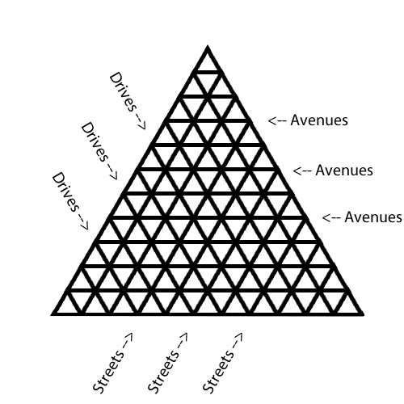

Time Limit: 1s
Animal Country had conquered new land from Badmen Country! The land was a pile of rubble but Dont Government (one of the founding fathers of Animal Country) embarked on a mega-project to enhance the name of Animal Country in the world of science and technology. A new city like no other was built from scratch! Although the government has not decided on its official name, citizens of Animal Country had given it a nickname – Triangle City!
Triangle city is unique because, unlike all other cities, its roads are angled 60° from each other. More specifically, the roads parallel to the equator are avenues, the roads in the direction of 60° north of east are streets, and the roads in the direction 60° north of west are drives (see diagram). They are numbered from 1 to N−1 with 1 being the longest road. Thus, all junctions (except those on the sides and corners of Triangle City) are six-way intersections. In addition, the border of Triangle City is one large triangle too!
Each small triangle is a single development and it is bordered by roads on all three sides. To infuse greenery into the otherwise concrete jungle, all developments that are bordered by an avenue north of itself (i.e. southward-pointing triangles) are parks, and all developments that are bordered by an avenue south of itself (i.e. northward-pointing triangles) are buildings.
Of the buildings in Triangle City, some are major commercial centres. Dont Government wants these commercial centres to be well-connected, so he wants every two commercial centres to have a bus service travelling between them. These bus services leave at the hour every hour, and travel directly to its destination, where it will park until it is needed again. The bus can stop to pick up/drop off passengers at any of the three intersections that are adjacent to the building. You may assume that there are enough buses at each junction so buses never run out, and that buses do not need any maintenence.
Each bus needs one unit of fuel to travel from one junction to an adjacent junction. Since fuel has to be transported from the port to Triangle City for the buses to use, Dont Government needs to know in advance how much fuel is needed. Your task is to calculate how much fuel is needed at each hour.
Note: If two commercial centres are share an intersection, then no bus is needed to transport people between those two centres.
Another note: At the same hour when a bus travels from centre A to centre B, another bus must travel from centre B to centre A.
The first line contains the number of test cases, and it is followed by a blank line. Each test case is as follows:
The first line contains a two integers, N, the number of developments that shares an edge with the first avenue (which is one of the borders of Triangle City), and K, the number of major commercial centres in Triangle City.
K lines follow. Each line contains two integers, the avenue number a (1 ≤ a ≤ N − 1) and street number s (0 ≤ s ≤ N − 1). (a + s ≤ N) This means that there is a commercial centre which shares an edge with avenue a and street s.
It is guaranteed that all the commercial centres are at distinct locations in Triangle City.
Multiple test cases will be separated by a blank line.
For each test case, output a line containing a single integer: the amount of fuel that is needed every hour, modulo 264.
1 6 3 1 2 3 1 4 2
4
For all subtasks N,K ≥ 2
Subtask 1 (5 points): N ≤ 200; K ≤ 100
Subtask 2 (20 points): N ≤ 106; K ≤ 103
Subtask 3 (20 points): N ≤ 106; K ≤ 106
Subtask 4 (55 points): N ≤ 109; K ≤ 106
Bernard Teo Zhi Yi
Created June 2013
This problem was created for IOI 2013 practice.